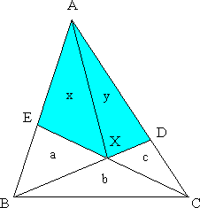
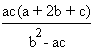

Solution to puzzle 2: Triangular area
BXE has area a, BXC has area b, and CXD has area c.
We will use the fact that the area of a triangle is equal to ½ × base × perpendicular height. Any side can serve as the base, and then the perpendicular height extends from the vertex opposite the base to meet the base (or an extension of it) at right angles.
Consider BXE and BXC, with bases EX and XC, respectively.
The triangles have common height; therefore EX/XC = a/b.
Similarly, considering BXC and CXD, with respective bases BX and XD, BX/XD = b/c.
Now draw line AX. Let AXE have area x and AXD have area y.
Consider AXB and AXD, with bases BX and XD, such that BX/XD = b/c.
Since AXB and AXD have common height, we have (a+x)/y = b/c.
Similarly, considering AXE and AXC, with bases EX and XC, x/(y+c) = a/b.
Cross-multiplying yields: by = cx + ac, bx = ay + ac.
Solving these simultaneous equations, we obtain x = ac(a + b)/(b2 - ac), y = ac(b + c)/(b2 - ac).
Therefore the area of quadrilateral AEXD = 
Source: Inspired by 'What is the area of the quadrangle?' on Nikora Family Puzzles. (Puzzle pages since taken down.)